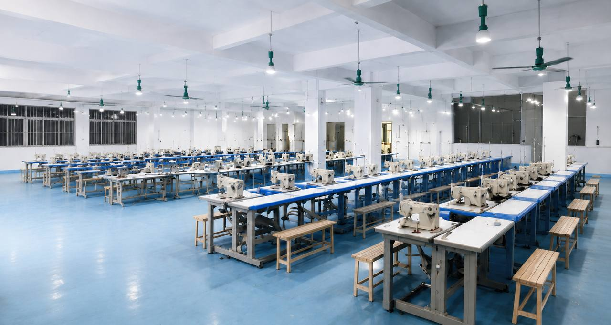

Garment Development
Turn sketches, references, and tech packs into production-ready samples with clear fabric and trim guidance.
OEM / ODM apparel manufacturing in Guangzhou
From first sample to finished shipment, we help fashion brands produce reliable garments with disciplined quality control, clear communication, and competitive lead times.
What we do
A practical production partner for brands that need sampling, bulk manufacturing, finishing, packing, and export support under one roof.
Turn sketches, references, and tech packs into production-ready samples with clear fabric and trim guidance.
Fit samples, pre-production samples, grading, and revision rounds before bulk production starts.
Cutting, sewing, finishing, ironing, packing, and shipment coordination for repeatable output.
Private-label support for fashion brands, uniforms, activewear, casualwear, and seasonal collections.
Our factory
Take a closer look at our production floor, industrial sewing equipment, organized workstations, and the space behind every garment we produce.

Quality control
From incoming materials to finished garments, we focus on fabric quality, accurate measurements, consistent stitching, and careful finishing.
Attention to detail throughout production helps maintain consistent workmanship.
How it works
A clear process keeps your project moving, from the first conversation through sampling, production, and shipment.
Tell us about your designs, fabric preferences, quantities, and target delivery date.
Review samples to check the fit, materials, construction, and finishing details.
Confirm the final sample, specifications, pricing, and production schedule.
Move into bulk manufacturing with checks throughout cutting, sewing, and finishing.
Check the finished garments, prepare the packaging, and arrange shipment.
Get in touch
Share your designs, quantities, and timeline. We can discuss the next steps for your garments.
Email: To be confirmed
Phone: To be confirmed
Location: To be confirmed